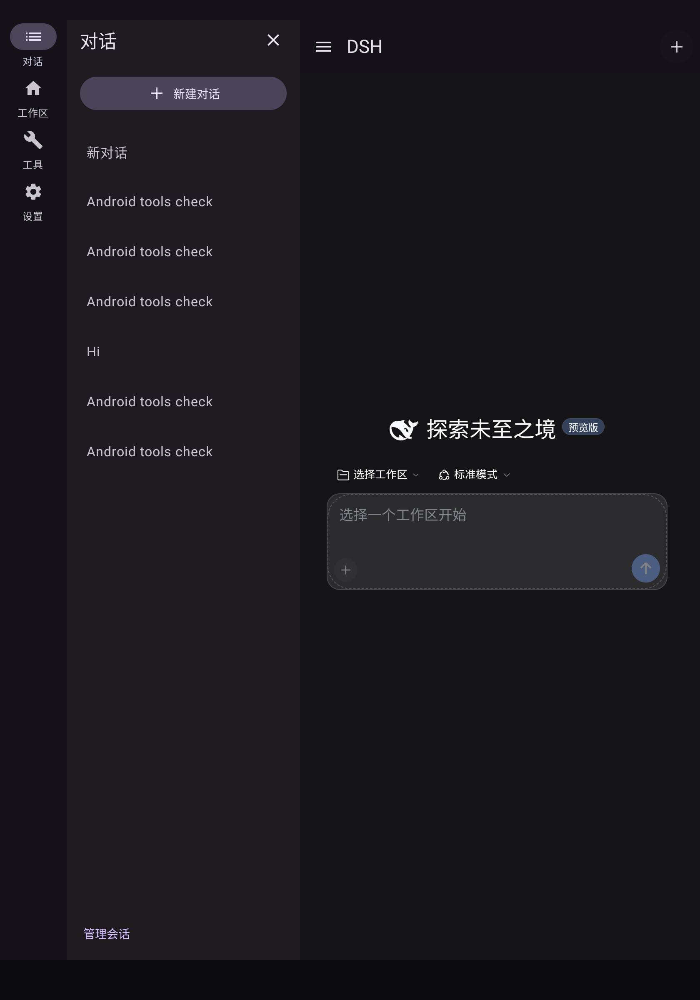
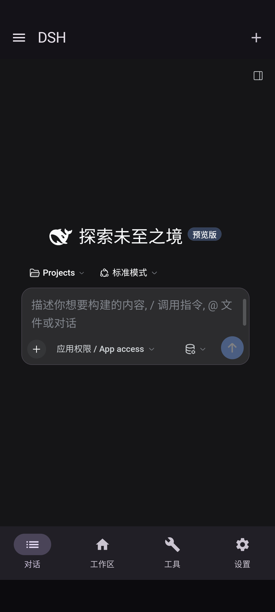

自适应工作区
你的对话，始终在左侧。
手机从左侧抽屉切换会话，主要导航留在底部。平板展开可收起的会话侧栏；分屏时随窗口宽度重新布局。

独立 Android 移植 · v1.0.0
从一段想法，到一次真实的工具调用。
在手机和平板上，继续你的 DeepSeek Harness 工作流。
Android 10+ · ARM64 · 无需 root / Termux / Shizuku

为手中的屏幕设计
不是把桌面页面缩小。导航、设置和会话列表按当前窗口重新安排，让内容保留应有的空间。
手机从左侧抽屉切换会话，主要导航留在底部。平板展开可收起的会话侧栏；分屏时随窗口宽度重新布局。

系统动态配色，或靛蓝、青绿、玫瑰、琥珀和岩灰。每一套都有对应的深浅色。
动态配色需要 Android 12+。字体默认不变，一个选项统一应用。
抽屉、菜单和页面使用 Material 动效与非线性缓动。关闭动画后直接切换，也尊重系统减少动画设置。
连接自己的模型
选提供商，检查预填的 API 地址，输入你的密钥，再点击获取可用模型。自定义入口排在最前，兼容服务也有自己的位置。
只有提供模型目录接口的协议可以在线获取；失败时展示原因，并保留手动填写。密钥不会由本项目中转。
使用当前地址和凭据查询，
在保存前选择需要的模型。
透明的技术路线
运行工具需要真正的运行时。这里选择为 Android/Bionic 构建依赖，让原生程序随 APK 一起安装。
官方 Material 3 导航、设置、抽屉、表单与动效。
保留上游的对话、流式输出、编辑器与终端内容。
独立引擎进程、Bash、Git、搜索工具和 PTY。
安装器管理的原生目录
原生可执行程序随 APK 安装；用户项目与运行时数据分开保存。
回环连接与来源校验
本地服务绑定回环地址，桥接仅向受信任的应用页面开放。
能力边界写清楚
命令在应用权限范围内运行。桌面电脑控制及额外原生扩展不冒充支持。
手机和平板选择 ARM64；x86_64 用于模拟器。旧调试签名版本请先导出数据再卸载。
设置 → 模型，输入自己的服务商配置，获取并选择模型。模型调用需要网络，通常产生服务商费用。
新建项目、克隆 HTTPS Git 仓库，或通过系统文件选择器导入 ZIP。运行命令前主动开启权限。
不是。DSH 引擎和工具在本机运行；模型推理由你选择的 API 服务完成。项目不附带离线大模型。
本项目为 Android/Bionic 构建 Node、Bash 等工具，使用 APK 原生目录执行。它省去完整 Linux 用户空间的初始化，并提供原生 Material 设置；代价是不能直接运行所有 glibc/Linux 程序。以 DSHA 为代表的 Ubuntu/proroot 路线有不同的兼容性取舍。没有进行跨项目性能对比，不宣称速度领先。
没有。具体测试系统、窗口、工具和限制见每个 Release 的验证报告。模拟器不能代替 ARM64 实体设备或 16 KB 页设备测试。依赖桌面平台或额外原生程序的插件不保证兼容。
工作区保存在应用私有目录，密钥由应用内凭据服务保存，并由 Android Keystore 保护相关加密材料。命令并非严格的单工作区隔离，开启前请阅读权限说明。卸载前应导出数据，分享导出文件前检查敏感内容。
站在开源肩膀上
Android 集成由 Jimmy-xuzimo 独立维护，与 DeepSeek 官方 Android 产品无关。上游和所有依赖保留各自版权与许可证。
DeepSeek Harness ↗第三方声明 ↗